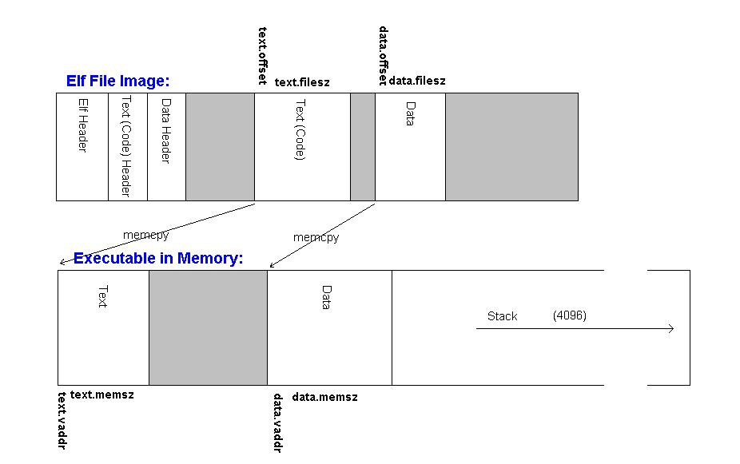

CMSC 412 Project #1
Loading Executable Files
Due Friday, September 17 at 6pm
Introduction
In this project, you will give GeekOS the ability to load
executable files from disk into memory. In a future project, you will
add the
ability to run user programs in a safe way, but for this project we
have
supplied code that will execute programs as part of a kernel process.
Your job will be to parse an executable file and fill in appropriate
structures so that our code can execute the program. You will know that
you have successfully loaded the program when it produces the specified
output.
ELF Files
ELF is a format for storing programs or fragments of programs
on
disk, created as a result of compiling and linking. There are
other formats, but ELF is the one you will be working with. An ELF file
is divided into sections.
For an executable program, these are the text section for the code, and the data section for global
variables. The ELF file contains headers that describe how these
sections should be stored in memory. In this project, you will
parse ELF executable files to tell the loader about the program's
sections so it properly can lay out segments in memory.
Executable Image
When a program is linked, the linker specifies that the text and
data sections of a program should be laid out in a certain pattern in
memory.
This allows the linker to set specific memory addresses for code and
data
references. We will call this pattern the Executable Image. The
work for this project will be to determine what the executable image
should be
for the loaded program (by using the ELF headers) and to fill in some
structures expected by the loader with this information. If you pass
the loader wrong information, it can not
load and run the executable correctly.
ELF File Format
The ELF file format is described in the ELF
Specification. The most relevant sections for this project are 1.1
to 1.4
and 2.1 to 2.7.
The steps involved in identifying the sections of the ELF
file are:
1) Read the ELF Header. The ELF header will always be
at the very beginning of an ELF file. The ELF header contains
information about how the rest of the file is laid out. You are
interested only in the program headers.
2) Find the Program Headers, which specify where in
the file to find the text and data sections and where they should end
up in the
executable image.
There are a few simplifying assumptions you can make about
the types and location of program headers. In the files you will be
working
with, there will always be one text header and one data header. The
text header
will be the first program header and the data header will be the second
program
header. This is not generally true of ELF files, but it will be true of
the
programs you will be responsible for.
The file geekos/include/geekos/elf.h provides data types
for structures
which match the format of the ELF and program headers. See A
trick in C: casting a pointer to a structure below for tips on
how to
parse the headers.
Project Requirements:
You should start this project with the new GeekOS
distribution. This distribution
contains the same code as the proj0 distribution, with the addition of
several
files that add new functionality and a file that provides much of the
structure
for the code you will write for this project. In addition, it
contains newer versions of the Cyclone runtime system, so be sure you
are using the most recent version of Cyclone (version 0.8.2a) if you
are going to use Cyclone (more on using Cyclone below). Note that until September 11, this version
of Cyclone is installed in /afs/csic/projects/cmsc412/cyclone-0.8.2a/bin, so as not to influence those working on
project 0.
We added a simple filesystem for GeekOS
called PFAT. PFAT provides basic routines for reading files from and
writing files to disk. The "disks" that bochs reads from are just
files in the LINUX filesystem. The disks are configured in the .bochsrc
file. The .bochsrc file provided in the distribution includes an
extra line that specifies how the disk should be interpreted, so do not
simply overwrite it with the .bochsrc you used in project 0.
If you look in the geekos/src/user directory, you'll
see
a file called a.c which contains the source code for the ELF
program you will need to load. When you gmake the project, a.c
will also be compiled and the resulting ELF file, called a.exe
will be written to the disk image hd.img
which is the file for the C: drive on bochs. The path name
for a.exe will be /c/a.exe.
Code has been added to geekos/src/geekos/main.c to
start a new thread that will run a function called Spawner that loads /c/a.exe
into memory,
calls your Parse_ELF_Executable()
then executes the program as you have set it up. If you have not
properly built the disk or used the correct .bochsrc file, the Spawner
will not be able to load /c/a.exe.
Your code to load the ELF file will go into geekos/src/geekos/elf.c,
where you must complete the Parse_ELF_Executable(char
*exeFileData, ulong_t exeFileLength, struct Exe_Format *exeFormat)
function. The executable file is read into memory and passed to you as
the exeFileData argument, which is of course exeFileLength
long.
You will need to parse the
ELF headers and fill out the Exe_Format structure.
The body of this function is the only piece of code that needs be
written for this project !
This is a rough guideline for what Parse_ELF_Executable()
has to do:
- Check that exeFileData is non-null and exeFileLength
is large enough to accomodate the ELF headers and phnum program headers.
- Check
that the file starts with the ELF magic number (4 bytes)
as described in figure 1-4 (and subsequent table) on page 11 in the ELF
specification.
- Check that the ELF file has no more than EXE_MAX_SEGMENTS
program headers (phnum field of the elfHeader).
- Fill in numSegments and entryAddr fields
of the exeFormat output variable.
- For each program header k in turn, fill in the
corresponding segmentList[k] array element of exeFormat
with offsetInFile, lengthInFile, startAddress,
sizeInMemory, protFlags with information from that program header k.
See figure 2-1 on page 33 in the ELF specification.
This diagram shows the relationship between the ELF File
Image and the Executable Image in memory.

This image is provided only to have a clearer picture about the
differences between the
ELF File Image and the Executable Image.
The loader will automatically copy segments from the ELF File
Image to the Executable Image, provided the information it
gets from the Exe_Format structure is correct. So you don't
need to worry about copying segments now, but you'll do it in project
2.
You will know you have loaded the program correctly if you
see the following output when you run bochs:
Hi ! This is the first string
Hi ! This is the second string
Hi ! This is the third (and last) string
If you see this you're happy
If your program prints these lines, you'll know that you've
done it correctly.
If things go wrong, try setting the lprogdebug flag in
geekos/src/geekos/lprog.c to 1, to print some debug statements
on the glorious way towards loading and running the executable.
Part of this project involves parsing the ELF header
structures that were read from the file. There is a specification of
exactly
how the elements of the header will be laid out on disk. There's a
simple way
in C to access the different fields of the header as the fields of a C
structure.
In the file geekos/include/geekos/elf.h,
there are structures defined that
correspond to the ELF header (called elfHeader)
and the ELF program header(called programHeader).
typedef struct {
unsigned char ident[16];
unsigned short type;
unsigned short machine;
unsigned int version;
unsigned int entry;
unsigned int phoff;
unsigned int sphoff;
unsigned int flags;
unsigned short ehsize;
unsigned short phentsize;
unsigned short phnum;
unsigned short shentsize;
unsigned short shnum;
unsigned short shstrndx;
} elfHeader;
typedef struct {
unsigned int type;
unsigned int offset;
unsigned int vaddr;
unsigned int paddr;
unsigned int fileSize;
unsigned int memSize;
unsigned int flags;
unsigned int alignment;
} programHeader;
The data at the beginning of the ELF file is laid out
in
exactly the same pattern as the elfHeader structure: there
are 16
characters, followed by 2 short ints,
followed by 5 ints, and so on. When you read in the ELF file, there
will be a
big chunk of memory containing the file contents and you will have a
pointer-to-char that points to it.
When you define a structure in C, the compiler will
arrange
things so that the memory for an instance of that structure will look
exactly
as you defined the structure. All the fields will be in the order you
specified
them, with no extra space in between. So the memory image that your
char*
points to is exactly the same as the memory image would be
created if
you created an elfHeader structure.
So, here's the important part. If you create a
pointer-to-elfHeader,
and you point it at the memory you read in, the code that knows how to
pull
fields out of an elfHeader structure will be able to pull
fields out
of your memory. You will tell the pointer that the memory it's pointing
at is
an elfHeader
structure, it will access the memory as if it were an elfHeader
structure, and everything will work because the memory really is exactly
the
same as an elfHeader structure.
Here's an example. Say we have a blah
structure
defined as:
typedef struct {
int number;
char name[10];
int age;
} blah;
and a big chunk of memory pointed to by
char * exeFileData
We can create a pointer-to-blah and point it at our
data:
blah *myBlah = (blah *) exeFileData;
We cast the pointer to make myBlah
(well, the compiler, really...) think that exeFileData
is a pointer-to-blah, rather than a pointer-to-char.
Now we can access the fields of myBlah in the usual
fashion:
printf("My blah's name is:
%s", myBlah->name);
Using Cyclone
Unfortunately, this project is one that is not terribly amenable to
using Cyclone, because the above trick for casting a pointer is in
general unsafe. For example, you could mistakenly cast a pointer
to buffer containing garbage to an elfHeader *, leading to
unpredictable results.
However, you can write C code to perform the casts you need and
perform the safety checks to ensure they are safe. Then you can
Cyclone code to call this C code to "convert" a char * to an elfHeader
*, and perform the operations on the elfHeader * in
Cyclone.
Here's how you might do this.
First, you will need to define a Cyclone file for your project.
Call it elf.cyc. You will need to modify the Makefile
to use this
Cyclone file; look at the project 0 Makefile for an example
of how to do
this. You can either call your Cyclone function from the C
version in elf.c, or else remove elf.c entirely and
use elf.cyc instead.
Second, inside elf.cyc, you will use Cyclone's extern "C
include"
facility to define your C functions. This facility allows you to
declare C code within your Cyclone file, and make its functions
available to be called from Cyclone code. Note that C code can
always be called directly from Cyclone code (you do not need to use
macros like you did in project 0 for calling Cyclone from C). You
can see some examples in the Cyclone
manual. For
this project, you'd do something like:
extern "C include" {
static elfHeader *getHeader(char *buf, ulong_t buflen) {
// your code here
}
// perhaps other functions here
} export { getHeader; }
The code inside the first set of braces is regular C code, and the
export statement indicates that it should be callable from
Cyclone. Note that all typedefs,
struct definitions, #defines,
etc. are exported by default; you do not need to put them in the export
list.
Within the same file, you will need to use extern "C include" again to
make the information in the geekos headers available for Cyclone.
For example, you will need to include geekos/screen.h to be able to
call Print, for
example. Thus, you would extend the above block
to be something like
extern "C include" {
#include <geekos/screen.h>
#include <geekos/elf.h>
// perhaps other includes here
static elfHeader *getHeader(char *buf, ulong_t buflen) {
// your code here
}
// perhaps other functions here
} export { getHeader, ...; }
For every variable or function appearing in one of these headers that
you wish to use, you will need to add it to the export list. In
general, it may turn out that the C type in the geekos file you are
including does not correspond to the Cyclone type that you need.
For example, C does not specify zero-termination or other qualifiers
that Cyclone does. There is a facility for defining Cyclone types
to override the C codes, called cyclone_override,
that is described in
the manual. You should not need that for this project.
However, beware that you should not #include geekos/string.h or
geekos/malloc.h, since
these could result in problematic types (but
your mileage may vary).
Finally, you can define your Cyclone function for parsing the file and
filling out the Exe_Format
structure. Because the
compiler automatically prepends any Cyclone definition with the prefix
Cyc_, you will also need
to define a C stub for Parse_ELF_Executable(char
*exeFileData, ulong_t exeFileLength, struct Exe_Format *exeFormat)
that calls the Cyclone one. Put this in your extern "C include"
block.
As usual, refer to the manual, and using the mailing list or newsgroup
if you have questions. Again, make sure you are using the most
recent version of Cyclone, version 0.8.2a (upgraded since the last
project). Again, note
that until September 11, this version of Cyclone is installed in /afs/csic/projects/cmsc412/cyclone-0.8.2a/bin, so as not to influence those working on
project 0.